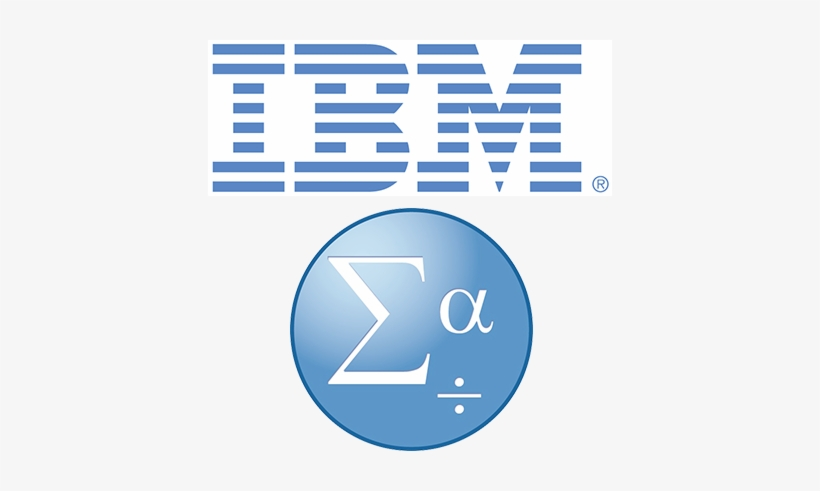

About Me
My name is Njeri Gathuku.I am an Accounting and Finance Graduate.
Currently a student at Moringa School pursuing Software Development.
I am passionate about programming. I am a fast-learner
My name is Njeri Gathuku.I am an Accounting and Finance Graduate.
Currently a student at Moringa School pursuing Software Development.
I am passionate about programming. I am a fast-learner

The project was about creating a website of a burger
restaurant . This included the menu and ways to contact them.

This project entailed building Lettuce Eat website.
The website had a reservation form and different
menu
options.
This website was built to showacase different breeds
of German shepherd dogs. Additionally, it allowed customers
This website was built to showcase a variety of streetfood
found in Korea.linked visitors to various restaurants
Below are the skills I have acquired over the years.
I love listening to music. I don't have a genre of music
that I prefer, I listen to anything depending on my mood.

Travelling gives me joy and has opened my eyes.
Additionally, it has led to meet awesome people that I've had
long-term friends.
I think volunteering your time is the greatest gift
you can offer someone in need. I do it as often as I can.
I have volunteered at the Food 4 Eductation in Ruiru.
I enjoy taking pictures of nature.whenever I travel or with friends.
I believe pictures capture memories.
Books are an integral part of my life. I feel like books are able
to take you to another world . I enjoy autobiographies and detective and mysery.

Being around friends is soul replenishing. I love being around friends
because we go on adventures together.